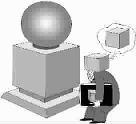

别让印象骗了你
●黄铁鹰
2006年6月，美国《读者文摘》杂志公布了一项在全球35个大城市进行的礼貌调查报告，其中有两项结论让很多人吃惊。
纽约这个被人视为冷酷和没有礼貌的城市，竟排在最有礼貌城市的首位。对此前纽约市长说：这可能是因为“9·11”事件让纽约人重新认识到生命的意义，人与人之间的关系变得友善了。我很怀疑一场灾难就能使一个有300多年历史、800万人口的城市精神面貌发生变化。除非纽约人是机械人，否则，城市和人一样，是生物组织，生物的DNA是不会轻易改变的。
我相信纽约的礼貌水平在“9·11”以前也应该比其它城市高，只不过以前没人做过城市间礼貌水平的对比调查罢了。然而更让我感兴趣的是：为什么事实与人们的印象会有这样大的差距呢？什么原因使纽约蒙冤？
合理的解释应该包括如下两个相关的原因：一、纽约太有名了。这不是历史和文化的原因，而是纽约比其他城市有力量。有钱人的钱差不多都跑到纽约，华尔街打个大喷嚏，全世界的房价可能都要感冒。纽约影响大，报道它的消息就多，于是，纽约经常被全世界人的眼睛盯着。盯着盯着，就看出毛病来了。纽约就是生活在镜头面前的大明星，脏事藏不住，经常有丑闻。二、纽约太牛了。20世纪美国抢了全世界的风头，成了无可争议的军事和经济强国。纽约是美国的代表，纽约能不骄傲吗？上帝说：人类最大的罪恶是骄傲。我估计国家也是如此。这难免不引起嫉妒，于是，那些不是毛病的毛病，也变成毛病了。
因此在这次《读者文摘》的调查中，被人认为最没礼貌的纽约竟获得礼貌世界杯金奖。于是，人们大惑不解：这个调查是不是搞错了？
其实，错的是我们的印象。明星本来就应该比一般人有礼貌。就像一般人外出至少要比在家里穿得正式一样，明星经常要面对大众，哪怕是装的，也一定会做到尽量礼貌。不信，你仔细观察一下明星的举止和谈吐是不是更优雅文明一些？可惜，这个事实没有被我们看到。其实我们的眼睛是看到了，只不过没有在脑袋里保存下来形成印象，这就是心理学所说的眼见并不为实的道理：人们的观点会影响人们收集和处理信息的方式，人们只注意和记忆那些自己所相信和感兴趣的东西，而忽略那些同样存在，但对自己不重要或不相信的东西。于是，现实世界在每个人的脑袋中呈现出不一样的印象。
大多数人没有见过明星本人，但大都认识明星。普通人是通过媒体认识明星的，比如，当娱乐新闻说某个明星举止粗俗，我们脑袋就会形成这个明星教养不好的观点。当我们有机会同她一起坐飞机时，如果她真的大笑了几声，就一下子和我们脑袋中的概念形成共鸣——这个人真是教养不好！然而我们忘了，她在飞行的4个小时内可能一直在阅读或小声与同伴聊天，然而，这个礼貌行为没有被我们注意和记忆，因为我们的脑袋已经被媒体报道先入为主了。心理学有一个锚定理论，说的就是这种先入为主的现象：一个事物在脑袋中的最先记忆，起了船锚的作用——抛下锚，船就漂不远了。
我们的脑袋先被家长锚定，比如，爸爸说：火会烫手，不要碰！日后，我们对火的看法就变成负面和危险的。后来，我们对世界的认识逐渐又被媒体锚定，随着上网、看电视的时间越来越长，媒体的锚定作用就越来越大。
记者首先考虑的是吸引我们的眼球，比如，高官贪污找情妇之类总是占据媒体的头版，于是，我们对干部的看法被锚定了，我们开始留意观察：嘿！当官犯法的还真多，昨天判了一个，今天又毙一个！看来当官的好人不多。可是，仔细想想，当官的跟我们不是一样吗？我们怕死，他们也应该怕，其实都是有贼心没贼胆的普通人；大多数人不敢犯法，大多数干部也不敢腐败和贪污，因此，大多数老百姓是守法的普通人，大多数当官的也是守法的普通干部。
纽约人最有礼貌，其实也符合经济基础决定上层建筑的理论。礼貌是什么？礼貌是教养，是人后天教育和培养出来的东西。然而，教养需要钱，温饱足而知廉耻嘛！虽然没有完整的统计数据，但我相信在整个20世纪中，纽约人的人均收入和GDP一定远远排在世界城市前列。因此，从钱包的厚度看，纽约人也应该最有礼貌。
然而，有钱，并不一定有礼貌。
这个调查的另一个让我吃惊的结论是：在被调查的人群中，40岁以下的人表现得最有礼貌，60岁以上的男性最没礼貌！这同人们的印象又不相符。我们的印象好像是：老年人一般都衣食无忧，往往会更从容、更有爱心和更有礼貌一些；相反，涉世不深的年轻人和正忙于证明自己的中年人，往往会更自私、更紧张和更粗鲁。
我们的印象又错了，这次错在哪儿？
原来错在对人性的理解上。我们以为人只要衣食无忧就应该幸福，食色，性也。其实人除了物质需求之外，还有被人承认的精神需求。人的幸福感必须建立在吃、性和被人承认这三点之上。可是，这三点需求与幸福的关系有所不同：吃与性是人的基本需求，不能满足人就不幸福，但受生理限制，达到一定程度后，对幸福感的提高作用就不大了。这就像激励理论所讲的保健因素——增加没用，减少不行！相反，人需要被别人承认的需求是无止境的，越被人承认，幸福感就越强，学术语言管这种需求叫激励因素——不断增加，才能幸福！
当我们看到那些衣食无忧、天天去公园的老人时，其实忘记了他们的人生少了激励因素！他们大都退休或接近退休，少了让别人继续承认的机会。物理学不是说，三点平衡才稳定吗？他们少了一个点。尽管他们闲庭信步，其实心里不稳了。虽然过的是天天跳舞、钓鱼和下棋的日子，但那都是找乐，找乐和真乐是两回事！整天喊活着没意思的小青年体会不到这点。因此，这些表面幸福的老人，不一定真幸福。
那么女人呢？为什么60岁以上的女人没有表现出特别的不礼貌？因为女人让别人承认的方式与男人不同，家庭是女人的精神追求，60岁以上的女人大都还有个家，她们的三个点还完整，因此，比那些老头就幸福些。
相反，40岁以下的人尽管生活压力大，但他们也三个点齐全。尽管大多数人都是在瞎忙活，最终也获得不了别人多么承认，但他们的梦没醒。因此，他们心里自然没那么烦，对人就相对礼貌一些。
可是，为什么他们表现得最有礼貌？而过了40岁，又恢复正常？那是因为人过40岁，梦就快醒了！人生如梦，怕的是天明！40岁之前的人处在更在意被别人承认的时期，正在梦中娶媳妇呢，因此，就要像纽约和明星一样，在人面前表现得更礼貌一些。比如，主动替别人开门，帮人家捡东西或多说几句谢谢。因此，我们也可以说40岁以下的人不仅更幸福，也更虚伪。因为，起码他们的一部分礼貌是为了交换而刻意表现的，当他们步入60 岁以后，就没此必要了。
那么我们为什么会形成老年人有礼貌、年轻人粗鲁的这种与事实不符的印象？其实，又是锚定惹的祸。首先，爷爷比爸爸对我们好，我们的大脑先被锚了一下。其次，我们被家长和老师教导要尊老，这又被锚了一下。可是，这次调查针对的是：人是否主动礼貌，比如，在街上掉散了文件，是否有人帮助捡？你进了大门后是否帮助后面的人扶门？在这种情况下，老头们的心情就露出来了：老子正烦着呢，懒得理你！接着，媒体又加入锚定我们的大军，电视、电影、报纸上的老头不是受苦受难，就是高高兴兴地“夕阳红”；相反，自私、不守纪律、犯罪和暴力行为的主角则都是年轻人。于是，我们的眼睛被戴上了有色眼镜——不礼貌的老头，变得和蔼起来，礼貌的年轻人，变得粗鲁起来！
我们的印象又骗了我们一次！
其实，人的印象很容易出错，特别在归纳问题时，当人们试图把个体特征抽象为整体特征时很容易以偏概全。比如用纽约个别人或个别行业的不礼貌现象代表纽约的礼貌水平；把个别年轻人的粗鲁特征放大到年轻人的整体；把自己熟悉的老年人的和蔼当成大部分老年人的特征。
印象错误的直接原因是上面提到的先入为主的锚定心理。但，人们为什么容易被锚定，容易形成先入为主的观点？原因在于人们有服从权威的心理。心理学实验证明：人们面对权威时，往往会交出思考的权利和降低个人的责任，比如人们往往认为，爸爸、领导、教授、韦尔奇、电视台、报纸等等说得一定对，从而轻信权威观点和盲目执行命令。
尽管历史一再证明：人类放弃思考就会导致荒唐，但人类不会因此而变得勤于思考，因为，在权威面前思维懒惰是人的正常心理。这种现象在高学历的知识人群中也经常发生。
为了证明这个问题，2005年和2006年的两个学期，我在北京大学两个MBA班的学生中作过测验。测验的问题是：有多少人同意中国房地产是暴利行业的观点。每班80个学生中95%以上的人同意这个观点。接下来是：暴利的标准是什么？同学们的观点开始不统一。是利润总额？是利润率？是营业利润率，还是资产利润率？是年利润率，还是项目利润率？是10%，还是20%、30%、40%才算暴利？大家争执不下。我把所有可能的暴利标准写到黑板上，让同学用表决的办法来决定哪些是房地产暴利的标准。
直到此时，这些正在受管理学和经济学专门教育的硕士研究生们才感到问题的复杂性，因为，任何一个标准都未能获得超过五分之一的票数！接下来，我又一次让大家表决：认为中国房地产是暴利行业的请举手。结果，只有不到10%的人举了手。我又问：那么认为中国房地产行业不是暴利行业的请举手，结果也只有不到10%的人举起了手！
另外80%的人怎么了？投了弃权票。弃权是什么？弃权就是拿不定主意，拿不定主意就是要思考！他们是专门接受经济管理教育的高材生，此时，他们明白了：房地产行业是否暴利是一个外行很难辩论的话题。
最后我问：如果大家不知道暴利的标准是什么，我们凭什么那么确切地对房地产行业是暴利的结论举了手？此时，80人的课堂发出支吾的声音，一个学生说：“如果房地产行业不是暴利，为什么中国富豪排行榜中有那么多房地产商？”他的话音没落，一个学生就反驳说：“如果中国金融、电信、汽车等垄断行业也像美国那样允许私人进入，中国房地产富豪的排名就不会那么靠前！”于是课堂又陷入了沉默，一个学生不服气，但又不很自信地说：“反正大多数人买不起房子，房地产就是暴利。”结果，课堂上许多人大笑起来，因为这是有违经济学基本常识的解释。最后，几个学生支吾地说：“反正报纸、电视、专家和官员都这么说，再一看认识和不认识的房地产商都很有钱，我们也就觉得是这么回事！”
看！这才是真正的原因：面对权威，连知识分子都放弃了专业的思考！难怪人们如此容易被锚定。
有了先入为主的观点，我们开始寻找论据。于是，真实的世界在我们脑袋里留下了真实和不真实的印象。印象是思想的细胞，各种印象在我们脑袋里经过抽象和归纳，变成了我们自己的观点：美国人怎么样，中国人怎么样；河南人怎么样，东北人怎么样；男人如何，女人如何；北京如何，上海如何等等。
可惜，这些印象有些是假的！
然而，假的印象比事实还重要，因为人们是按照印象所形成的观点去行事的。于是，我们的世界才变得如此荒唐。
但是，在荒唐的世界中，聪明的人还是能少做一点荒唐的事。2006年4月，克林顿在接受美国著名电视节目主持人，也是美国最富有的女人奥普拉采访时，奥普拉问：“你的女儿有了男朋友，已到了谈婚论嫁的时候了。作为父亲，你给她关于男人的最好建议是什么？”克林顿毫不犹豫地说：“我只对具体的男人给她提出建议，从不对男人进行整体的评价。”
聪明啊！克林顿，他知道抽象了的印象往往是错的。
(李欣摘自《万科》总第501期，黎青图)